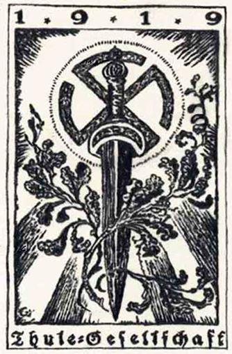

L’usure bancaire, des Écritures Saintes à nos jours. Pour une finance éthique et solidaire
par Michèle AKTAŞ
De toute évidence, l’intérêt sur l’argent crée un vol. Dès lors, pour se défaire d’un ennemi puissant, il ne suffisait pas de l’arrêter. Il fallait l’obliger de reculer au moyen de contraintes fiscales et de mesures discriminatoires sans quoi la richesse extorquée aux autres par voie usuraire le rendait infiniment redoutable. Les Écritures saintes sont remplies de recommandations à ce sujet… Mais nous verrons dans quel but la prohibition de l’intérêt a été contournée.
D’après l’auteure belge, Michèle Aktas, ce serait sa rencontre avec un ressortissant turc qui lui aurait permis de trouver ce dont le matérialisme la privait, l’approche spirituelle qui a motivé son ouvrage paru aux éditions de l’Onde en novembre dernier au terme de 9 années d’autodidaxie : L’usure bancaire : des Écritures Saintes à nos jours – Pour une finance éthique et solidaire.
Le Coran mentionne l’existence de djinns (mot arabe dérivé du mot ‘‘cacher, dissimuler’’) qui, à la différence des anges, sont dotés du libre arbitre et sont capables de se montrer malfaisants à l’égard des êtres humains. Leur influence peut aller jusqu’à la possession et la démence, corrompant les fondements de l’ordre ancien pour finalement soumettre tous leurs ennemis à la captivité et à la persécution.
Ainsi, l’esprit malin pousse ses victimes à l’immoralité, à la perversion sexuelle et au nudisme. À la suite de leur asservissement aux puissances démoniaques, Dieu est alors perçu comme un être agissant continuellement dans l’histoire. Cette découverte constitue l’élément central de la religion gnostique, l’influence démoniaque dont l’ambition est d’édifier un gouvernement mondial.
Or, il est vrai que le pouvoir occulte du Vatican a orienté la politique coloniale des empires espagnols, portugais et français depuis le XVIIe siècle si bien qu’en détruisant les vieilles structures comme la communauté rurale, l’autoconsommation familiale et l’artisanat, il a permis de créer les conditions du régime qui devait succéder de pair avec un changement majeur du système monétaire.
En fait, les pèlerins chrétiens pouvaient confier aux Templiers la somme nécessaire à leur pèlerinage en échange d’une lettre sur laquelle était inscrite la somme déposée. Arrivés à destination, ils récupéraient l’intégralité de leur argent en monnaie locale. Seulement, le montant du remboursement ne correspondait pas toujours à la somme initiale du dépôt lorsqu’il pouvait être camouflé par le changement de monnaie.
Après avoir été condamnés pour plusieurs chefs d’accusation, les croisés s’établirent dans différentes îles de la Méditerranée, se dénommant les ‘‘Chevaliers de Rhodes’’ ou les ‘‘Chevaliers de Malte’’. Ils y ont constitué leur État jusqu’à ce qu’ils soient vaincus par les armées de Napoléon et qu’ils transférèrent leur siège principal à Rome, devenant la milice du Pape.
Plus tard, le fondateur de la Compagnie de Jésus, Iňigno Lopez de Recalde, se serait inspiré d’une secte chiite dont le chef était Hassan ibn Sabbah (1056-1124), les Haschischins. Ceux-ci ayant laissé en Espagne de nombreux écrits, il est vraisemblable que Loyola ait découvert ces principes autoritaires et s’en soit emparé d’après l’ex-abbé Victor Charbonnel (en 1899) de sorte que l’ordre intérieur des Jésuites aurait pris l’Église catholique et la Franc-maçonnerie en otage pour faire avancer son projet : conduire à la « transmutation » du Siège romain dans la continuation des Templiers.
L’un des points de son programme consistait à transférer tout le patrimoine privé et public entre les mains des dirigeants de l’Ordre, prévoyant d’utiliser la corruption monétaire, le chantage et les menaces de façon à obtenir le contrôle des personnes influentes.
En ce sens, Saint Paul parlait d’une muraille de protection qui viendrait à s’écrouler si bien que plus rien ne pourrait retenir le mystère de l’iniquité jusqu’à ce qu’il surgisse du milieu de l’Église ! Les prophéties décrivaient ce mal comme un mystère, celui des congrégations ésotériques ayant pour but de réformer le christianisme tout comme elles s’en sont prises au message mosaïque en introduisant les erreurs des vieux cultes païens.
Ainsi, le pape Ratzinger (Benoît XVI) s’est montré favorable à la perspective d’une autorité publique à compétence universelle (…)1 à partir des institutions supranationales telles que le FMI et la banque mondiale alors que celles-ci ont été imaginées par le cartel international des banques d’affaires privées.
Cette implication en faveur du totalitarisme est également celle de Jorge Mario Bergoglio (le pape François) dont il nous fait part dans son encyclique « La sauvegarde de la maison commune ». La propagande sur le réchauffement climatique est actuellement une technique pour justifier l’agenda 21, un programme pour le XXIe siècle visant à organiser la société post industrielle et post démocratique de la manière suivante : – La fin de la souveraineté nationale. – La gestion étatisée de tous les écosystèmes, les océans, l’eau douce, le développement rural. – L’abolition de la propriété privée.
– La « restructuration » de l’unité familiale. – La création de zones de peuplement humain. – Le repeuplement de masse car les gens seront forcés de laisser vacantes les terres où ils vivaient. – La restriction majeure des déplacements. – L’attribution du travail indifféremment des choix personnels.
D’ailleurs, « La Conspiration Jésuite » (Le Plan Secret de l’Ordre) publiée en 1848 raconte à juste titre comment le jésuite Leone, alors novice âgé de 19 ans, surprit une conversation entre le Général jésuite Roothaan et ses provinciaux (vers le milieu des années 1830) où il était question de l’avènement d’un gouvernement mondial contrôlant la hiérarchie Catholique Romaine, le Pape et tous les gouvernements du monde. Sorti en plusieurs langues, l’ouvrage a fait le tour de l’Europe, ce qui contribua au soulèvement populaire de 1848 contre les jésuites lors de la Seconde Révolution Française. Toutefois, cet épisode se termina par le renforcement de leur pouvoir en Europe.
Un prélat qui a quitté la prêtrise, Jérémie Crowley, avertissait en 1912 qu’ils vont utiliser notre armée pour rétablir le pouvoir temporel du Pape, sachant que le réseau des jésuites serait la plus grande agence de renseignement, incluant peu à peu les agences d’espionnage et les forces armées du monde entier selon un membre de haut niveau de la CIA, E. Howard Hunt.
Mais sachez que jamais les auteurs du plan n’entreprennent quoi que ce soit sur une vaste échelle sans l’avoir d’abord testé sur une échelle restreinte, nous dit un sataniste converti au christianisme (Doc Marquis).
D’innombrables jeunes hommes furent donc instruits par la SS (Schwarze Sonne) et envoyés au Tibet en vue de percer le secret de la doctrine tibétaine, en particulier un ordre de magie noire avec lequel la Société Thulé et les SS ont réussi à collaborer.
Le Dr W. O. Schumann, membre des Sociétés Thulé et Vril, fit à ce sujet un exposé à la Faculté des sciences de Munich. En voici un extrait : « La nouvelle ère qui arrive sera l’ère d’une technique nouvelle, positive et divine (…) » (extrait des archives secrètes des SS) suivant les enseignements de médiums. Ces études ont abouti à une gamme complète de soucoupes volantes basées sur le principe de la lévitation antigravitationnelle.
Seulement, la dissimulation des informations relatives aux OVNIS vise à occulter la probable résurgence des nazis compte tenu de leur supériorité technologique avec l’existence d’armes miraculeuses pouvant atteindre la vitesse de 40 000 kilomètres/ heure, sans bruit ni gaz d’échappement !
L’écrivain Halik fut même le premier à faire le lien entre le nom de l’organisation et l’insigne porté par l’aviation allemande dans la région du pôle à la fin de la guerre, le Soleil Noir désignant la force cosmique primitive qui aurait permis aux Égyptiens et aux Aztèques de construire les pyramides. Son article dans un magazine ésotérique autrichien n’a pas suscité beaucoup d’attention à l’époque alors que le cœur du mythe des OVNIS nazis résidait dans ces lignes : « Les disques volants représentaient une part importante du plan allemand pour créer un État extraterritorial avant de relancer l’assaut contre les Alliés après 1945 ».
Certes, les complots font partie du répertoire d’action de la Compagnie de Jésus et parmi eux, la création d’organisations de l’ombre permettant de désigner des boucs émissaires et de justifier des mesures répressives telles que la dévastation de la Terre Sainte.
Si les 2 premières guerres mondiales furent en effet destinées à créer l’État artificiel d’Israël comme l’affirmait Albert Pike, la 3e conflagration sera fomentée en utilisant les divergences que des agents attiseront entre sionisme et wahhabisme (deux mouvements créés par les séides du pouvoir occulte) afin que soient exterminés tous ceux qui ne reconnaissent pas l’autorité du pape.
Toutefois, il ajouta : « Notre complot sera révélé. Les nations se retourneront contre nous avec esprit de revanche et notre suprématie sur elles ne sera jamais réalisée ».
Saint Augustin et d’autres hommes d’Église en appelaient déjà contre le danger que représentait la suppression du rôle de l’État dans le contrôle de la monnaie. Léon XIII ajoutait quant à lui : « La France reviendra aux traditions de Saint Louis ou elle périra dans la honte et la ruine. » Le roi Louis IX, dit saint Louis, condamnait sans réserve les prêts à intérêt. En 1234, il libéra même ses sujets du tiers de leurs dettes. Puis, il ordonna que ce tiers soit restitué à ceux qui les auraient déjà remboursées. Il interdit également d’emprisonner les chrétiens ou de vendre leurs biens immobiliers dans le but de s’acquitter des dettes envers leurs créanciers. Enfin, il confisqua les biens de ces derniers.
Cependant, il faut rappeler que les jésuites, en dépit de leur suppression par tous les grands royaumes d’Europe, se sont illustrés dans la sanglante Révolution française et qu’ils continuent d’exercer leur emprise, notamment à l’aide des Chevaliers de Malte, de l’Opus Dei, des francs-maçons, du mouvement New Age, de la commission trilatérale et du club de Rome à l’image du symbole abondamment utilisé par des responsables catholiques et jésuites. L’œil qui voit tout à l’intérieur d’un triangle représenterait le Saint-Siège supervisant l’ensemble de ses branches, bien souvent à l’insu des membres, dans l’attente de l’établissement du « Saint Empire ».
Cette influence dévastatrice a fini par prendre un caractère universel avec la destruction de toutes religions et de toutes sociétés traditionnelles au profit du projet œcuménique de « religion naturelle » tout en nous aveuglant face au déroulement des événements prédits.
Mais « voyagez, puis regardez ce qu’il est advenu des criminels. » (Le Coran) Il apparait que leur pouvoir n’a été qu’éphémère face à l’irrésistible délivrance des opprimés.

Partager cette page